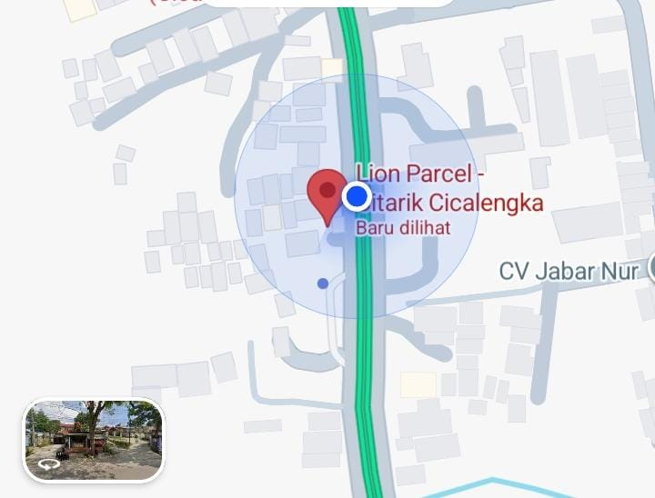

Lion Parcel Terdekat di Rancaekek? Ini Alamat POS101 Nanjungmekar

Lagi cari Lion Parcel terdekat di Rancaekek? Gak perlu muter-muter ke Cicalengka atau Bandung kota. Lion Parcel Bandung POS101 Nanjungmekar ada di Jl. Raya Barat Cicalengka RT 1 RW 1, Nanjung Mekar, Rancaekek. Lokasinya pinggir jalan raya, gampang ditemukan, parkir luas, dan buka tiap hari jam 08.00–20.00 WIB.
Cek Ongkir Lion Parcel Rancaekek Sekarang
Kirim ke seluruh Indonesia & luar negeri pakai INTERPACK. Chat WA dulu, biar gak antri di kios.
💬 Chat WhatsApp 0851-8309-04861. Kenapa POS101 Jadi Lion Parcel Terdekat Paling Dicari di Rancaekek?
Bukan cuma dekat, tapi lengkap:
- Posisi Strategis: Di jalur utama Raya Barat Cicalengka - Rancaekek, dekat perbatasan Nanjungmekar. Dari KHT, Dangdeur, Bojong, Cicalengka cuma 5-10 menit.
- Buka Tiap Hari: Senin–Minggu tetap buka, jadi kalau hari Minggu mau kirim paket urgent tetap bisa.
- Layanan Lengkap: Reguler, Jago, Bigpack, Interpack (internasional), Oke Bos, semua ada. Bisa kirim dokumen, paket kecil, sampai bigpack di atas 10kg.
- Gratis Packing Kardus & Bubble: Untuk packing standar kami bantu, biar paket aman sampai tujuan.
📍 Lokasi Lion Parcel Bandung POS101 Nanjungmekar
Jl. Raya Barat Cicalengka RT 1 RW 1, Nanjung Mekar, Rancaekek, Kabupaten Bandung, Jawa Barat 40394.
Patokan: Dekat SPBU Nanjung Mekar, seberang Alfamart Raya Barat.
2. Layanan di Lion Parcel Terdekat di Rancaekek Ini
Di POS101 Nanjungmekar kamu bisa:
- Kirim Dalam Negeri: REGPACK, JAGOPACK (same day), BIGPACK untuk barang besar.
- Kirim Luar Negeri INTERPACK: Ongkir murah ke Malaysia, Singapura, Taiwan, Hong Kong, Australia dan 50+ negara lain.
- Pick-Up Gratis: Area Rancaekek, Nanjungmekar, Haurpugur, Cicalengka bisa jemput paket, WA aja admin.
- Cek Resi & Klaim: Bantu tracking dan klaim asuransi kalau paket kendala.
Buat UMKM Rancaekek yang jualan di Shopee/TikTok, bisa daftar BOSSPACK biar dapat cashback dan harga khusus.
Kesimpulan
Jadi kalau kamu search “Lion Parcel terdekat di Rancaekek”, langsung aja ke Lion Parcel Bandung POS101 Nanjungmekar di Jl. Raya Barat Cicalengka. Buka tiap hari, pelayanan ramah, harga #BeraniDiandelin. Gak perlu jauh-jauh ke Bandung, semua kebutuhan kirim paket kamu beres di sini.
Nama Agen: Lion Parcel Bandung POS101 Nanjungmekar Rancaekek
Jam Operasional: Senin–Minggu, 08.00–20.00 WIB
Alamat: Jl. Raya Barat Cicalengka RT 1 RW 1, Nanjung Mekar, Rancaekek, Kabupaten Bandung
WhatsApp: 0851-8309-0486